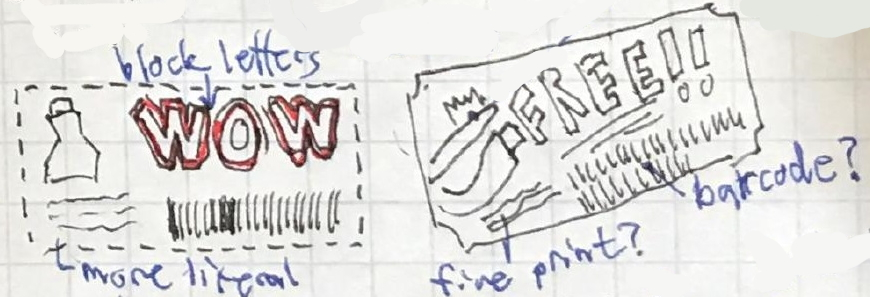

Symbolizing Specie
Icons. They're important. Making icons for my client was one of my favorite challenges for the couponing project. I don't have much expertise in the field of iconography, but I was eager to try my hand at the discipline.
Our project isn't realized enough that we know what sorts of icons will be needed, so I focused on making icons to establish a bit of a visual identity for the site; my main goal was to try and capture the feelings coupons try to evoke more than the look of coupons themselves. I did try to make a more literal visual translation of coupons in these two:
...but it ultimately came up short. Including barcodes and the 'fine print' doesn't really evoke the satisfaction of saving money, and including English words could clash aesthetically when the site is translated into other languages.
Putting those shortcomings aside though, I do think these little illustrations capture a lot of important elements that coupons often have. The block lettering, how often toothpaste and detergent are involved, the perforation on the sides, and--my favorite--the barcodes and fine print. While I decided not to include those elements in the rest of the iconography, I think including stuff like fine print and barcodes would be appropriate in some circumstances. Perhaps in an article discussing the more labyrinthine systems couponing entails, thus highlighting how the system is ultimately stacked against the consumer?
My other attempts were far more abstract. "Box with dollar sign and exclamation mark" is the purest distillation of a coupon's emotional intent--"get excited about the money you're going to save!" I like the simplicity of the design. Unfortunately, the downside to this is that "$" means United States dollars in specific. This brings back the same trouble with aesthetic clash presented above with English text. I believe it wouldn't be as intense since this site is aimed at people living in the Bay Area, but all the same I wanted to try for a more universal symbol. Did I succeed? Well...
Let's see if this image means anything to you, dear reader:
Recognize this? No? That's perfectly understandable; it depicts a cowry shell--those cool looking shells you see on the beach. Fun fact, these have historically been the most common forms of currency across the world. A basic building block of Chinese, 貝, is even an abstract representation of one of these and is found in words related to money. ...while I find this interesting, I doubt anybody from the present day would be able to pick up on that at a glance. So not the best universal symbol for money.
A solution?
Of the various symbols to represent money, a '%' sign offers the most upsides and the least concerning downsides.
It isn't a word, so being able to read English isn't required to understand it. As a symbol it's less region exclusive than the USA-specific $, since all currencies use fractions in some way.
In summary, sometimes the easiest icons are the ones so simple they can can be put at the end of this sentence: %!